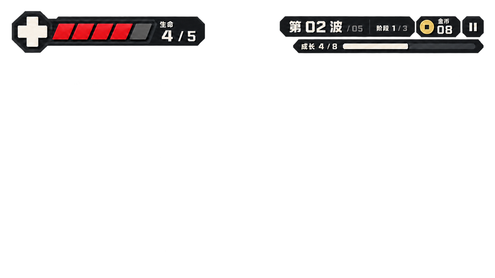

<!doctype html>
<html lang="zh-CN">
<meta charset="utf-8">
<meta name="viewport" content="width=device-width, initial-scale=1">
<title>红色血条 · 逐格流光小样</title>
<style>
  * { box-sizing: border-box; }
  html, body { margin: 0; background: #10151c; }
  main { width: 100%; max-width: 760px; aspect-ratio: 760 / 230; position: relative; overflow: hidden; }
  .art { position: absolute; width: 220%; top: 0; left: 0; }
  img { display: block; width: 100%; }
  svg { position: absolute; inset: 0; width: 100%; height: 100%; pointer-events: none; }
</style>
<main aria-label="生图制作的红色血条，窄流光从左向右依次扫过四个有血格，空血格不亮">
  <div class="art">
    
    <!-- 只在独立样板中给生成贴图叠加表现；不重新绘制底图，也不连接游戏生命状态。 -->
    <svg viewBox="0 0 1672 941" aria-hidden="true">
      <defs>
        <clipPath id="filled-cells">
          <path d="M200 82H250L229 131H179ZM265 82H315L294 131H244ZM330 82H380L359 131H309ZM395 82H445L424 131H374Z"/>
        </clipPath>
        <linearGradient id="light">
          <stop stop-color="#ffe5da" stop-opacity="0"/>
          <stop offset=".36" stop-color="#ffb199" stop-opacity=".15"/>
          <stop offset=".58" stop-color="#fff0df" stop-opacity=".86"/>
          <stop offset=".7" stop-color="#ffe0cd" stop-opacity=".65"/>
          <stop offset="1" stop-color="#ffe5da" stop-opacity="0"/>
        </linearGradient>
      </defs>
      <g clip-path="url(#filled-cells)">
        <g fill="#ffae91" stroke="#ffd0ab" stroke-width="2">
          <path class="pulse" opacity="0" d="M200 82H250L229 131H179Z"/>
          <path class="pulse" opacity="0" d="M265 82H315L294 131H244Z"/>
          <path class="pulse" opacity="0" d="M330 82H380L359 131H309Z"/>
          <path class="pulse" opacity="0" d="M395 82H445L424 131H374Z"/>
        </g>
        <path id="shine" d="M0 76H38L14 138H-24Z" fill="url(#light)"/>
      </g>
    </svg>
  </div>
</main>
<script>
  const shine = document.getElementById('shine');
  const pulses = [...document.querySelectorAll('.pulse')];
  const pulseStarts = [110, 235, 360, 485];
  // 用户反馈冲击感弱：扫光缩为0.65秒，逐格20毫秒提亮、120毫秒回落，其余留静止间隔。
  // 仅处理表现，空格不在遮罩内，不会被误读为恢复生命。
  window.setPreviewTime = function (milliseconds) {
    const phase = ((milliseconds % 2000) + 2000) % 2000;
    shine.style.opacity = phase <= 650 ? '1' : '0';
    shine.setAttribute('transform', `translate(${150 + 340 * phase / 650} 0)`);
    pulses.forEach((pulse, index) => {
      const age = phase - pulseStarts[index];
      const envelope = age < 0 || age > 140 ? 0 : age < 20 ? age / 20 : Math.pow(1 - (age - 20) / 120, 2);
      pulse.setAttribute('opacity', (envelope * 0.46).toFixed(3));
    });
  };
  if (!new URLSearchParams(location.search).has('capture')) {
    const start = performance.now();
    function animate(now) {
      window.setPreviewTime(now - start);
      requestAnimationFrame(animate);
    }
    requestAnimationFrame(animate);
  } else {
    window.setPreviewTime(0);
  }
</script>
</html>
